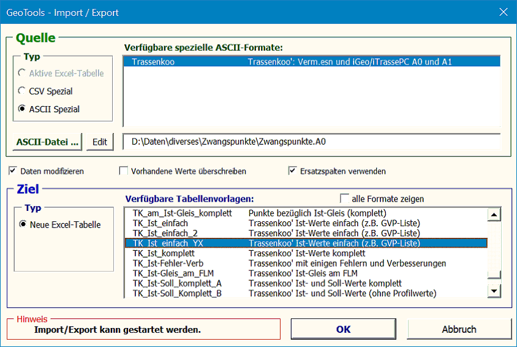

Mit dieser Funktion können Daten aus bestimmten ASCII-Dateien, CSV-Dateien
oder aus der aktiven Tabelle gelesen und in eine automatisch neu zu erstellende
Excel-Tabelle geschrieben werden (siehe Grundlagen zum Import / Export von
Daten).
Es startet folgender Dialog:

Es sind folgende Angaben zu machen:
· Typ
der Datenquelle:
· Aktive
Excel-Tabelle. Voraussetzung: benannte Spalten.
· CSV-Spezial
==> Datei auswählen
· ASCII-Spezial
==> Format (d.h. Importprogramm) und Datei auswählen.
· Eventuell Optionen setzen.
· Zielformat (d.h.
Excel-Vorlage), falls mehrere Vorlagen zur Auswahl stehen.
Der Import / Export kann erst gestartet werden, wenn eine sinnvolle Auswahl
getroffen wurde.
Mit der Option Daten
modifizieren werden folgende Berechnungen mit den
gelesenen Daten ausgeführt, bevor diese ins Ziel geschrieben werden: · Fehler und Verbesserungen
· Ist-Überhoehung aus Bemerkung
· Trassenkoordinaten ==> Gleissystem (Zwangspunktreduktion)
==> Dadurch ist es z.B. möglich, eine Fehlerliste zu erzeugen, indem als Quelle
eine Tabelle mit Ist- und Sollwerten verwendet wird und als Ziel eine Vorlage mit
den entsprechenden "Verbesserungen" angegeben wird.